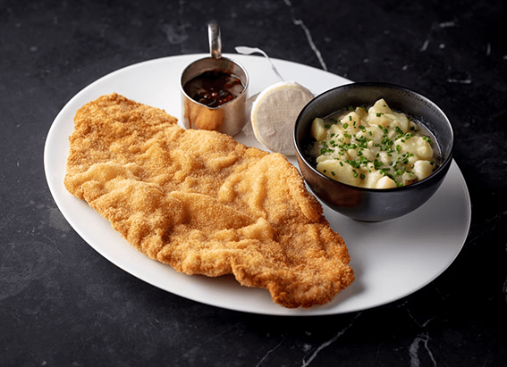
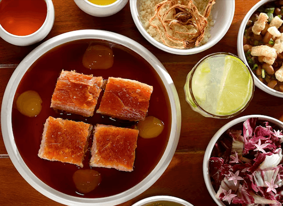
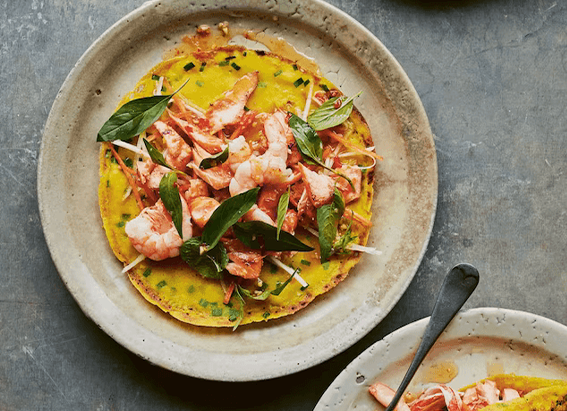

NATIONAL GEOGRAPHIC
It’s good to feel bad after your COVID shot
SCIENCE
Jeremy Warner has had six shots of the COVID vaccines. He’s an oncologist at Brown University in Providence, Rhode Island, where he treats immunocompromised patients with cancer who are especially vulnerable to COVID-19. To keep his patients safe, Warner rolls up his sleeves as soon as the U.S. Food and Drug Administration recommends a new vaccine, but he dreads the aftermath. "Each time I'm like, oh my God, I can't do this again!"
After each COVID shot Warner gets a fever, headaches, shaking chills, and painful, swollen joints along with the expected tenderness at the site of injection. "The worst was the second shot that lasted two or three days," recalls Warner. "This recent round, maybe one or two days."
The good news: new research shows that more side effects might be beneficial because they reflect greater production of virus-fighting antibodies after vaccination.
"The more symptoms people reported, the higher their antibody levels were," says Aric Prather, a clinical psychologist at the University of California San Francisco, who led the study.
Fear of reactions make some people hesitant to get a COVID shot and a third of adults in one study blamed vaccine side effects for not taking the bivalent boosters last winter that targeted two strains—the original SARS-CoV-2 virus and an Omicron subvariant.
"[But] the side effects show the vaccine is working," says Drew Weissman, an immunologist at the University of Pennsylvania, whose research led the development of the mRNA vaccines, including Moderna's and Pfizer's. Weissman and Katalin Karikó were recently awarded the 2023 Nobel Prize in Physiology or Medicine for their work on modifying mRNA.
COVID-19 vaccines are overwhelmingly safe and effective. Fewer than 1 percent of the 10.1 million U.S. respondents who have completed health surveys through the Centers for Disease Control's V-safe program launched in December 2020 have reported needing a medical care after vaccination.
But mRNA vaccines are among the most painful of vaccines, comparable to the shingles vaccine. Scientists don't yet know why. "There's still a lot that's being learned about the side effects of mRNA vaccines," says Deborah Fuller, a vaccinologist at University of Washington School of Medicine, Seattle. Fuller is attempting to develop next generation of nucleic acid vaccines and hopes they will be better tolerated.
Side effects after jab indicate high antibody levels
During COVID-19 vaccine trials, between 50 and 90 percent of participants reported chills, fatigue, headache, and malaise, and more than 30 percent of vaccinated people experience some discomfort.
About 70 percent of V-safe respondents reported pain at the injection site; fatigue was the most common side effect in the first week after receiving the vaccine.
Prather wanted to know whether psychological, behavioral, or biological symptoms could predict the vaccine response. To address the question, he recruited 364 adults to donate blood samples before their first dose of a COVID vaccine, and then again donate samples one and six months after getting two doses of an mRNA vaccines. Prather and his colleagues measured the level of antibodies in volunteers' blood; not just the ones that react with the spike protein used in the vaccine, but also the "neutralizing antibodies" that suppress the original SARS CoV-2 virus.
The scientists compared the levels of antibodies against the volunteers' self reported symptoms such as chills, feeling tired, feeling unwell, headache, pain at the injection site over seven days. They found that when the worst symptoms occured after the second shot it was associated with higher antibody levels.
Though the symptoms may be unpleasant, our data and other studies provide evidence that your immune system is doing what it needs to do, says Prather. “ That’s a good thing.”
Although the new study is not yet peer reviewed, it is consistent with previous research.
“Generally speaking, if you develop more symptoms, you have a better antibody response," says Kevin Dieckhaus, an infectious diseases specialist at UConn Health, in Farmington, Connecticut. Dieckhaus's own research has shown that people who experience COVID-19 vaccine-associated symptoms develop longer lasting immunity.
Comments :
- john Very good
- john Very good
Leave a Reply
Your email address will not be published. Required fields are marked*
Related posts:
-
How to make the perfect wiener schnitzel
The origins of the wiener schnitzel are hazy. It's considered by Austrians to be their national dish, but it’s also a German favourite. And, as it bears some resemblance to veal alla Milanese, it's sometimes suggested to have originated in Italy
View article -
5 must-try dishes in São Paulo, from duck hearts to slow-roast pork
Skewers of salty, charcoal-grilled chicken hearts are found everywhere in the city, from all-you-can-eat steakhouses to street barbecues and stalls at football matches. Modish small-plates-and-wine venue Cora
View article -
A taste of Vietnam, from hearty sour broths to fragrantly spiced street food
Vietnam’s cuisine has been shaped over generations by a rich tapestry of cultural influences. French colonialism introduced baguettes, leading to dishes like banh mi sandwiches; Vietnamese spring rolls
View article